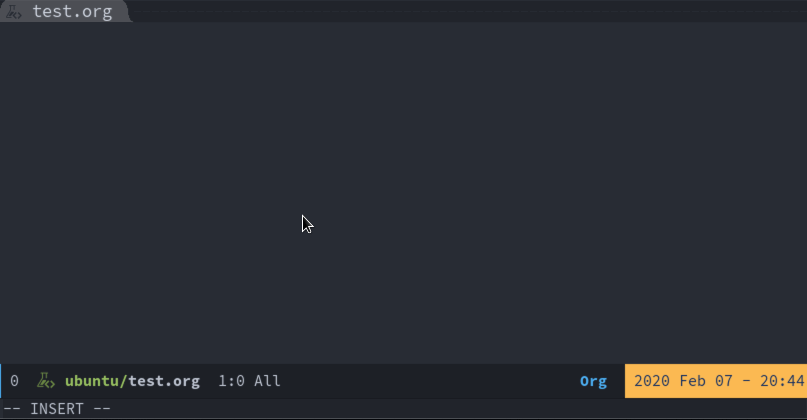

GPG加密五：在 Emacs 中使用 GPG 加密
文章目录
前言
之前我们介绍了 GPG 的使用，也介绍了用 GPG 来管理自己的密码。
今天我们来讲一讲在 Emacs 中配合 GPG 加密 Org mode 。
emacs 配置
在使用 GPG 加密之前，我们先要对 Emacs 进行配置。
|
|
使用
配置好 Emacs 后，我们创建一个 test.org 并为标题添加 crypt 的 TAG ，然后保存文件， Emacs 会自动把含有 crypt 的内容进行加密。

解密使用 org-decrypt-entry
Mac 下的问题及解决方案
在 Mac 上使用的时候，会发现没办法输入密码，通过如下配置可以解决。
|
|
碰到的问题
如果你之前有使用过 GPG 很可能会碰到 Error: (error "Encrypt failed") 这个错误，我找了半天，终于在 Symmetric file encryption with emacs / Stable / Discussion Area - GPGTools Support 这里找到了解决办法，折腾了好久。
解决的办法很简单，把 GPG 进程杀死，然后重新操作就可以了。
|
|
总结
GPG 相关的内容，到这里就全部讲完了。
我在日常中主要使用 GPG 来加密文件，管理密码，并配合 Emacs 使用。